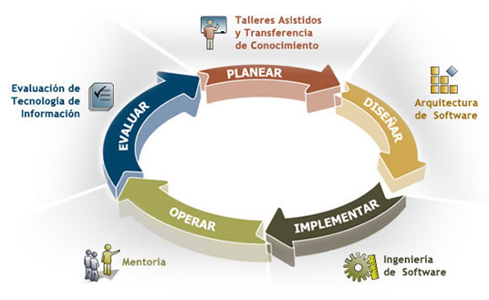

🤔 La Ingeniería de Sistemas ha evolucionado a lo largo de las décadas para adaptarse a las necesidades cambiantes de la tecnología y la sociedad. Desde los primeros desarrollos en sistemas computacionales hasta la inteligencia artificial y la automatización, su impacto ha sido fundamental en múltiples industrias.
1. Enfoques en Ingeniería de Sistemas
Enfoque Sistémico:
Este enfoque considera que un sistema es un conjunto de elementos interrelacionados que trabajan en
conjunto para lograr un objetivo. Se basa en la Teoría General de Sistemas de Ludwig von Bertalanffy
y se aplica en diversas áreas como la informática, la gestión empresarial y la automatización.
Enfoque Cibernético:
Basado en la cibernética de Norbert Wiener, este enfoque estudia cómo los sistemas pueden autorregularse
mediante la retroalimentación. Es clave en la robótica, la inteligencia artificial y el control de sistemas.
Enfoque Socio-Técnico
Este enfoque reconoce que los sistemas no solo son tecnológicos, sino que también involucran factores
humanos y organizacionales. Se aplica en el desarrollo de software y en la gestión del cambio dentro
de las empresas.
Enfoque Basado en Modelos:
Aquí se representan los sistemas mediante modelos matemáticos y simulaciones antes de implementarlos
Es utilizado en el diseño de software, redes de telecomunicaciones y automatización industrial.

2-Metodologías en Ingeniería de Sistemas
Existen diversas metodologías para el desarrollo de proyectos en Ingeniería de Sistemas. Algunas de las más utilizadas son:
2.1. Metodologías Tradicionales
Ciclo de Vida en Cascada (Waterfall)
Se basa en una secuencia lineal de fases: análisis, diseño, implementación, pruebas, despliegue y mantenimiento.
Es útil en proyectos con requisitos bien definidos, como sistemas de control industrial.
Desventaja: No permite cambios una vez iniciada la fase siguiente.
Modelo en V
Extiende el modelo en cascada, pero con una validación y verificación en cada fase.
Se usa en proyectos de alta seguridad como el desarrollo de software en la industria aeroespacial y médica.
2.2. Metodologías Ágiles
Scrum
Basado en ciclos cortos de trabajo llamados sprints, donde se entregan funcionalidades incrementales.
Se aplica en desarrollo de software, gestión de proyectos tecnológicos y startups.
Facilita la adaptación a cambios rápidos y mejora la comunicación en equipos.
Kanban
Se enfoca en la visualización del flujo de trabajo mediante tableros con tareas en diferentes etapas.
Es usado en la gestión de proyectos y mejora continua en empresas de tecnología.
Extreme Programming (XP)
Se centra en la calidad del código y la colaboración con el usuario mediante pruebas continuas y programación en pareja.
Se usa en entornos donde la calidad del software es prioritaria.
2.3. Metodologías Basadas en Modelos
RUP (Rational Unified Process)
Utiliza un enfoque iterativo y basado en modelos para el desarrollo de software.
Se divide en fases: inicio, elaboración, construcción y transición.
Desarrollo Basado en Componentes (CBD)
Se enfoca en reutilizar componentes de software ya existentes para agilizar el desarrollo.
DevOps
Integra el desarrollo y la operación de software para automatizar despliegues y mejorar la entrega continua.>